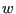
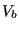
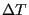
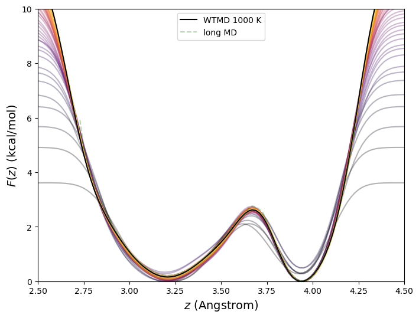

In the well-tempered variant [49] of metadynamics, The weight  is augmented with a Boltzmann factor that diminishes exponentially as  builds up:
 is the so-called “bias temperature”, and it acts to diminish the contribution to at any  as time progresses, leading to a converged bias potential. The free energy is reconstructed by an inversion of the converged bias potential that requires the bias temperature:
as time progresses, leading to a converged bias potential. The free energy is reconstructed by an inversion of the converged bias potential that requires the bias temperature:
Fig. 48 shows the free energy vs. C1-C4 distance for butane at 273 K computed using well-tempered metadynamics with parameters identical to the standard metadynamics run of the previous section but with a bias temperature of 1000 K.
Figure 48:
Free energy in kcal/mol vs. C1-C4 distance in Å, for butane in vacuum at 273 K computed using MD (green dash) and well-tempered metadynamics (black solid). The MD simulation was run for 10 timesteps, and the metadynamics for 10. The bias temperature for well-biased metadynamics was 1000 K. Intermediate values of the metadynamics free energy are also shown color-coded from purple (early) to yellow (late). The final metadynamics free energy is the average over all free-energy snapshots (i.e., it is the time-average negative bias potential).
|
 |
cfa22@drexel.edu